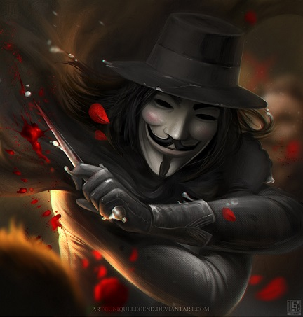

THE LEGEND
To say that V is a mystery would do him an injustice. A private, intelligent and humble person in all things except for his vivacious contempt for the government (and his impressive vocabulary), V has kept much of his past in the dark, just as he himself prefers to be.
The earliest days revealed about him depict him as an inmate at Larkhill Resettlement Camp after World War III—one of the concentration camps established by the fascist government where political prisoners, homosexuals, people of color, Jews and Muslims were kept and eventually exterminated.
While a “guest” there, he was one of the many others that were subjected to medical experimentation via artificial hormone injection, but the only one to survive. In fact, the “death drug” seemed to have the opposite effect, giving him incredible athleticism and mental capacity.
Perhaps due to these effects, V became a master in multiple fields, including explosives, martial arts, philosophy, literature, politics, computer hacking, music and chemistry. And through this gained knowledge, he was able to craft his escape through use of a home-made mustard gas bomb that burns down most of the camp—which inevitably led to its evacuation and shut down.
After escaping, he's spent years reinventing his image and vowing to protect the people from the government’s tyranny.